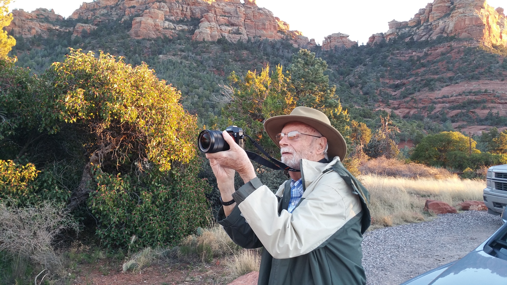

Ken Watson Celebration of Life
My Dad Kenneth Watson was a Physics professor at UC Berkeley.
My Dad had a passion for boating. We sailed between San Francisco and San Diego many times when I was a teenager and in my early 20s.
After retiring Dad taught himself 3D animation and video editing and he enjoyed writing screen plays and getting friends and family to do voices for animated characters.
Carol and Ken on a cruise to Hawaii
Carol, Dad, and Mom in Balboa Park
Dad and Faye were on a cruise on the Columbia River with Carol and I, and my brother Ron and sister in law Anita
Later in life, before he retired, Dad bought a power boat that he and my Mom kept in the Sacremento Delta
Taken when Dad was 97, he and I would haul his considerable amount of camera gear around Sedona Arizona - here we are at Red Rock State Park
Taken when Dad was 98, Dad and I are on the Grand Canyon south rim - Carol and I took Dad on a road trip and this was one of our stops

Dad bought a green suit so he could edit himself out of video sequences
Carol and I had stayed in Quebec City for 5 days before Dad, Faye, Ron, and Anita joined us to get on a cruise ship. Dad woke up early and was tired and hungry (he and Faye had delays travelling the night before) so I bought him breakfast
A picture of Dad and Mark in his apartment
When I visited Dad in San Diego, we would haul his camera and video gear around town so he could get video and still photos for his various projects - here we are at San Elijo Lagoon
This is an old picture of Mom and Dad on their 44 foot ketch Corina - we were in the Sacramento Delta area
Dad, Mark, and Ron in the ship's library, on the way to Hawaii
Mom and Dad on the beach in La Jolla - Carol and I were visiting and we were having a meal
Faye and Ken - visitng us in Sedona Arizona

My Dad was visiting us in Sedona. After my Mom passed away, I would occasionally drive to San Diego to pick up my Dad and bring him to Sedona where he especially enjoyed photography - for me one of the best parts of these visits was the 16 hour round trip drive with Dad (he could talk on any subject and the rides were always interesting)
Another of Dad's visits to Sedona
I am not sure which cruise this was taken on - Carol and I, Ron and Anita, and Dad and Faye
Another cruise - Mark and Carol, with Ken and Faye